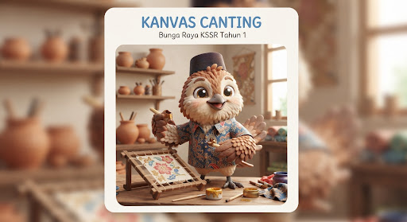

palette
KSSR Tahun 1
Studio Canting
check_circle
1. Lakar
auto_awesome
2. Warna
hourglass_empty
3. Kering

Cikgu Merbok
verified
"Warnakan kelopak merah sebelum lilin sejuk, adik wira!"
KAIN MORI PRIMA
Lilin Canting Panas: 80°C
water_drop
Tempurung Pewarna Asli
Ketuk untuk tukar
Fakta Seni KSSR Tahun 1:
Lilin panas mencengkam kain mori supaya pewarna tidak tumpah ke ruang lain. Inilah magis batik Malaysia!